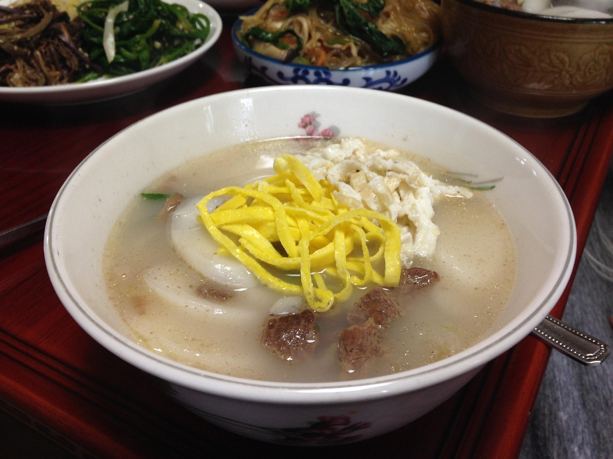

Tteokguk

Description
Traditionally eaten during New Year's Day, tteokguk is believed to grant good luck for the year.
It consists of rice cakes, sliced eggs, meat, seaweed, and sesame oil.
Ingredients
- Rice cakes
- Beef/Chicken broth
- Soy sauce
- Sesame oil
- Egg
- Beef
- Seaweed
- Green onion
Steps
- Prepare broth
- Boil rice cakes and add to broth
- Cook beef
- Cook eggs and slice into strips
- Chop seaweed into strips
- Garnish with toppings
- Drizzle sesame oil
Home